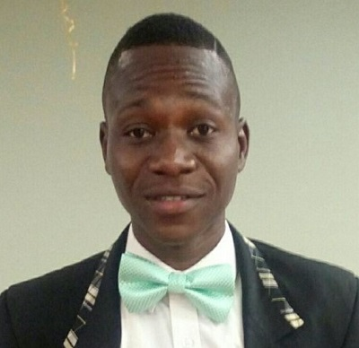

Emmanuel Ajuwon | WDD130
Hello Everyone!
My name is Emmanuel Ajuwon, (9ja Boy).
I am from Abeokuta, Ogun State, Nigeria.
I enjoy reading and also like to play with my pet called Simkin.
I'm a guest-oriented at Radisson Hotel Group and result-driven professional with work experience in
guest relation-oriented service and hospitality that helped me develop a solid commitment to the
organizational mission - guest satisfaction.